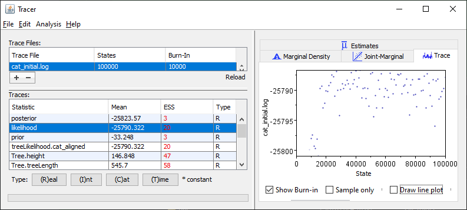

We will download sequences of the catalase gene from the
NCBI,
a database covering the majority of recorded DNA sequences.
-
Head to the NCBI Ortholog page for catalase.
-
Select some taxa to study.
Start by typing marsupials into the "Enter taxonomic name" box.
Select
Marsupials (Metatheria) from the dropdown to filter results.
-
You should see several sequences.
Note the taxa for which data are available (the common name
is given after the binomial epithet), and the slight variability in the length
of the catalase gene (in amino acids, aa).
-
Select four or five taxa and click “Add to cart”.
The table outlines marsupial relationships; each order is
monophyletic, and the Australian
Australidelphia form a clade within Australidelphia.
| Superorder |
Order |
Genus |
Common name |
|
| — |
Didelphimorphoa |
Monodelphis |
Gray short-tailed opossum |
|
| — |
Didelphimorphoa |
Gracilinanus |
Gracile mouse opossum |
|
| Australidelphia |
Microbiotheria |
Dromiciops |
Monito del monte |
 |
| Australidelphia (Australian) |
Diprotodontia |
Vombatus |
Wombat |
|
| Australidelphia (Australian) |
Diprotodontia |
Petaurus |
Sugar glider |
|
| Australidelphia (Australian) |
Diprotodontia |
Phascolarctos |
Koala |
|
| Australidelphia (Australian) |
Diprotodontia |
Trichosurus |
Brushtail possom |
|
| Australidelphia (Australian) |
Dasyuromorphia |
Antechinus |
Antechinus |
|
| Australidelphia (Australian) |
Dasyuromorphia |
Sarcophilus |
Tasmanian devil |
|
|
Silhouettes: Phylopic contributors
|
-
Clear the taxonomic name box and add expand the taxonomy tree
to display the placental mammals.
Select two taxa from each of the three major placental clades:
-
Afrotheria (African mammals)
-
Laurasiatheria (
Glires (rabbits & rodents)
+ Euarchonta (tree shrews, flying lemurs + primates)
)
-
Euarchontoglires (
insectivores, bats, ungulates;
pangolins + carnivores
)
Laurasiatheria and Euarchontoglires together form a clade.
The "well-corroborated trees" in
Asher & Smith (2023) give a
detailed depiction of universally accepted relationships.
-
Finally, add both available species of monotreme to your cart.
The platypus and echidna will together form our outgroup.
-
Open your cart (trolley icon, should read e.g. “12 items”).
-
Note: Due to a bug with the website, if you close your cart window,
you may not be able to open it again without refreshing the page and
losing your progress.
-
Click "Download" → "RefSeq transcripts (FASTA)"
(one sequence per gene). This will download the mRNA
sequences that encode the catalase gene in these taxa.
-
Open the downloaded file in a text editor (I recommend
Notepad++;
Apple users might prefer
Zed)
-
Perform a search & replace to replace spaces (
)
with underscores (_).
Align DNA sequences
Now we are ready to align our nucleotide sequences.
-
Open the
MUSCLE web tool
-
Under "Input sequence", select "Choose file" to upload your
edited FASTA file.
-
Under "Parameters", select "Output Format: Pearson/FASTA".
-
Click "Submit" and wait for your results to be ready.
-
Whilst the alignment runs, consider the following questions:
-
Can we know whether an alignment is "correct"?
(What would this mean?)
-
The "correct" alignment matches the pattern of mutations that
historically occurred, and is impossible to know for sure
without travelling in time and watching evolution happen.
The best we can do is to find an "optimal" alignment, according
to whatever parameters we set.
-
If the alignment is "incorrect",
what will the consequences be for inference?
-
If two bases are different because they are misaligned,
we will be inferring changes where none occurred.
Our reconstruction of evolutionary relationships and rates
will be misled.
-
Explore your alignment: switch to the "Alignments" tab, then zoom and drag using the axis.

-
Notice that the MUSCLE algorithm aligns the sequences assuming
a phylogenetic explanation for differences; it thus generates
an unrooted phylogenetic tree as part of
finding the best alignment. View this tree on the
"Phylogenetic Tree" tab (scroll to "Phylogram").
-
How would the tree look different if a root was specified?
-
The relationships would remain the same, but the outgroup
would be at the bottom, making a different set of taxa
appear monophyletic. This doesn't affect relationships or
sequence similarity; it does affect dates.
-
How do the relationships in your tree compare to those in
well-corroborated trees?
-
If they aren't similar, we might start to worry about the
quality of the alignment or the suitability of this gene
for analysis.
-
Download the results in FASTA format by heading to "Tool Output→Download".
-
If that doesn't work, try "Result Files→Alignment in FASTA format"
-
If necessary, use my
sample output file.
-
Rename the file so it has a
.fasta extension
(replacing the default .txt).
-
Stuck?
Try asking e.g.
Claude,
ChatGPT
"How do I change a file extension in Windows 11?"
Generative AI often gets to the point faster than
SEO–bloated
web search results.
Design a molecular clock analysis
-
If you haven't already,
download BEAST2 and unzip the contents to a folder on your computer.
-
Navigate to this folder and run "BEAUti".
You may need to approve a security prompt.
-
Import your alignment file using "File→Import alignment"
-
If you see "Unsupported alignment",
check that you changed the file extension to
.fasta
- Confirm that the data type is "nucleotide"
-
Open the "Site Model" tab and select a Substitution Model.
The default, JC69, assumes a constant mutation rate between
any of the four nucleotide bases.
The HKY model incorporates the fact that chemically similar
bases are easier to substitute – and tend to encode chemically
similar amino acids, so mutations are less likely to be
deleterious.
The TN93 model fine-tunes this further by adding further
parameters, whereas the fully generalized GTR
(Generalized Time Reversible) model allows a distinct mutation
rate between each different pair of nucleotides (64 in total) –
whilst potentially more accurate, it takes more data to infer
the values of all 64 parameters, making the model succeptible
to overfitting with smaller datasets like ours.
Select the HKY model and set Frequencies: Empirical.
-
Open the "Clock Model" tab. We will use a Strict Clock
for our initial analysis. Leave the Mean clock rate at its
default setting (1).
-
Open the "Priors" tab and update the "Tree.t" prior from
"Yule Model" to "Calibrated Yule Model"
-
Save your progress (File → Save)
Callibrate node ages with priors
-
At the bottom of the "Priors" tab, click "+ Add Prior".
We are going to constrain the age of a clade.
Our prior first dictates that a clade exists; then
allows us to set a probability distribution on the
date of its most recent common ancestor
(MRCA).
-
If prompted for a prior type, select "MRCA Prior".
- Be careful!
Priors cannot be deleted – if you select the wrong type,
you'll have to start again from your last save file.
-
If your version of BEAST does not display this prompt, proceed to the next step.
-
Select all members of the group you wish to constrain.
We'll start with the monotremes, Ornithorhynchus and
Tachyglossus. Move these taxa to the right-hand
list (by pressing ">>").
-
Enter "Monotremes" as a taxon set label
-
Click "OK".
The prior should now appear on your "Priors" tab – but as yet,
it will have no effect on your analysis.
-
Tick the "Monophyletic" checkbox.
The prior now causes any trees in which these taxa do not
form a clade to be discarded (i.e. assigned zero likelihood)
during the analysis.
-
Now that the "Monophyletic" checkbox has defined the taxa
as a clade, we can constrain the date of their MRCA.
Choose a prior from the the "[none]" drop-down box.
A "Gamma" prior is probably appropriate here.
-
Select the ▶ button to expand the prior.
Specify appropriate values for the "Alpha", "Beta" and
"Offset" parameters.
Specifying a prior
This is a good point to ask what an appropriate prior
distribution might look like.
Bayesian priors attempt to encapuslate our prior beliefs,
i.e. what we think we know before we run the analysis.
At this point you probably don't have much prior
knowledge about monotreme origination. But such information
is seldom far away; a Google Scholar search for
“
Oldest monotreme” throws up a 2008 PNAS article
(fourth result for me)
“
The oldest platypus and its bearing on divergence timing
of the platypus and echidna clades”.
This study is perfect for our needs:
it reports a total-group platypus, which is by definition a
crown-group member of the clade we have constrained
(strictly, Platypus + Echidna – there may be other crown-group
monotremes not included in our analysis).
This fossil is dated to 121–112.5 Ma, so the MRCA of
platypus and echidna must be older than 112.5 Ma;
this gives us a value for our "Offset" parameter.
The other parameters are more subjective.
This this is a rather derived fossil and
(based on the PNAS abstract and the snippets in the other Google Scholar results)
the fossil record of monotremes seems to be quite sparse,
so I think it’s quite likely that there are older fossils
remaining to be discovered – it would be surprising if the
only relevant fossil we'd found was so close in time to the MRCA.
The Beta parameter allows us to scale ("stretch") the distribution.
The default value of 2 seems too small for me;
our default priors assign a 95% probability to the MRCA
being younger than 122 Ma (see the Quantile report under
the curve visualization), but our dating uncertainty on the
fossil itself spreads back to 121 Ma.
Let's try a larger value: perhaps 200?
Does this prior look reasonable? Check the shape of the
curve and its summary statistics.
The very earliest stem-group mammal fossils are ~320 Ma,
so it's highly unlikely that the
platupus-echidna MRCA dates back that far –
The mammal crown group is probably not older than
Morganucodonts, late Triassic (205 Ma) upper-stem Mammals,
so we probably don’t want a prior that assigns much probability
to ages older than 205 Ma for our monotreme divergence node.
Perhaps a Beta value of 20 looks more reasonable?
We should also consider that the fossil is quite derived,
and that the ~30 Ma gap to the second-oldest platypus
fossil suggests that the monotreme fossil record is rather
incomplete.
These considerations can be reflected in our Alpha parameter.
Compare values of 1 and 10 to get a feeling for how
this parameter changes the shape of the probability
distribution.
If we felt it was likely that our constraining fossil was
very close to the date of the MRCA, we might pick a small
value of alpha; in this case, I am inclined to opt for a
larger value of Alpha, which increases the mean of the
distribution – simply put, it moves the "hump" of the
distribution further back in time.
Increasing Alpha also extends the tail of the distribution,
so Beta will need adjusting accordingly: I'm happy with values
of Alpha = 3; Beta = 10; Offset = 112.5.
A vertebrate palaeontologist with a better understanding
of platypus morphology and mammal taphonomy would no doubt
come up with a different set of values.
If we have lots of informative data, we hope that the signal
will outweigh the prior: we update our beliefs in light
of new evidence.
But if our data are not particularly informative, we might
find that our results simply echo our priors back to us:
in which case, justifying the precise shape of our prior
distribution becomes even more important.
-
Select at least one, ideally two or three, further clades to
constrain. Search the literature to justify your design
of priors. You may wish to complement the fossil record
with palaeogeographical information: for instance,
Austrailia separated from the Gondwanan continent around
30 Ma.
-
To root the tree, add an MRCA prior including everything that's
not a monotreme. Label it appropriately
("Theria", or simply "ingroup").
Leave the prior type to "[none]" and select "monophyletic".
This will force the tree to be rooted on monotremes.
Incidentally, it will also cause the analysis to report
a posterior estimate of the date of the MRCA of therians
(placentals and marsupuals).
-
Finally, configure the
MCMC
analysis. Set the Chain Length to 100 000.
Simply put, this will try 100k different parameter variations
(e.g. mutation rate, tree topology, branch lengths),
sampling more plausible values of the parameters with higher
frequencies.
-
Safe your settings (File→Save).
Conduct the analysis
- Return to your BEAST folder and launch BEAST.
-
Select the "Input file" you just created in BEAUti.
- Notice the box reading "default: only write new log files".
-
Log files will be named based on the input file;
if you wish to overwrite or add to a previous run, select
the relevant option, otherwise the presence of previous log
files will cause the run to abort with an error.
- Press "Run" to begin the analysis.
-
Open Tracer.
-
This is not in the BEAST folder – you should have
downloaded it separately; see the "Before you start"
instructions at the top of this page.
-
Under "Trace Files:", press "+" to load your BEAST log.
-
If the run's not finished,
Tracer will display the current results; press the "Reload"
button to update.
-
Use a template file
if needed.
-
Note the Estimated Sample Size for each parameter.
This is an indication of how well the range of possible values
has been explored; values < 200 indicate that reconstructed
values are unlikely to be statistically robust.
-
Click on the "likelihood" Statistic in the Traces: list.
Select the "Trace" tab and untick "Draw line plot"
to view the likelihood of successive samples.

When a run has converged on the posterior distribution,
the samples should plateau to form a cloud about a steady
likelihood value. This shows that likely parameter values,
are sampled often; and unlikely values
(giving a lower likelihood of the model given the data)
are sampled less often, in proportion to their probability.
The low values early in this run suggest that it took a
while for the run to converge on a sensible set of parameters.
These early results should be "burned off" and ignored,
or they will skew the sample; the simplest solution
is to run the chain for longer, which will also increase our
sample size.
-
Return to BEAUti and increase the MCMC Chain Length.
2 000 000 should be enough.
-
Save the BEAUti configuration. Use the same filename.
-
Launch BEAST, select your file, and change from "default" to
"resume" to append the 2M new steps to your previous chain.
-
Whilst the analysis is running, return to Tracer and "Reload"
the results.
In the example results below, likelihood values have formed
a plateau, with the initial low values in the greyed-out
"burn-in" stage; and the
ESS values are now mostly above 200.
Our results may now be meaningful.
If your run is not displaying this behaviour, or you are
seeing very low ESS values, check your model carefully for
errors or inconsistency in your priors; e.g. did you forget
to mark a clade as monophyletic, or specify unrealistically
young/old dates for a clade's MRCA?
Interpret results
-
Switch to the "Estimates" tab and select the
mrca.age(Monotremes) Statistic from the Traces: list.
This displays the posterior probability of
the age of the MRCA of platypus and echidna.
Notice that this rather resembles our prior distribution:
were the data uninformative here?
-
Return to the BEAST folder and launch DensiTree.
-
Open the .trees file corresponding to your analysis.
The file name will be
{BEAUti-filename}-{alignment-filename}.trees;
see example.
DensiTree overlays each sampled trees. As trees are
sampled according to their probability, the more densely
shaded results are more likely.
-
Use Style:Triangle to view relationships. It may help to
also Show→Consensus Trees or Show→Root Canal.

-
Use Style:Block and Grid: Full grid to view the date
estimates of key nodes. This is an indirect way of viewing
the information available in Tracer – but Tracer can only
produce these histograms for constrained nodes.
-
If the relationships recovered do not match those of the
well-constrained tree, you may need to add more constraints
by repeating the analysis after adding "monophyletic" MRCA
priors in BEAUti. Try constraining Eutheria and Metatheria
to be monophyletic; use a different file name so you can
distinguish your results.
-
Compare the estimates of the divergence times to your priors.
Have your data been informative?
-
Now look at the absolute values of your divergence time
estimates, especially at the base of the ingroup.
Do these look realistic?
Perhaps our assumption of a "strict" clock, in which
mutation rate is constant across every branch of the tree,
was too strong an assumption.
Species-by-species differences
might cancel each other out, simply introducing noise;
but if mammals had an early burst of radiation,
or radiated rapidly after the K-Pg extinction, their rates
may have been systematically higher for some of their history.
This would make a strict clock predict an earlier origin.
-
Return to BEAUti and set the Clock Model to
"Optimized Relaxed Clock".
-
Save the settings with a different filename.
-
Run a BEAST analysis using this settings file.
-
Use Tracer to verify that your run has converged, and has
obtained a sufficient sample size (ESS > 100 for
relevant parameters).
As the relaxed clock has a larger parameter space (why?),
you may need to extend the run, perhaps up to 5M generations?
-
Compare the age of key clades to the priors you specified.
Are the data informative?
Evaluate influence of priors
-
Select the "Sample From Prior" box on BEAUti's MCMC
tab, and save the settings to a new file.
-
Run this analysis in BEAST. This runs the analysis without
any data, to explore the effective priors.
This captures any interactions between your initial prior
distributions.
-
Load the results into Tracer. Compare the effective priors
with the posteriors you obtained when you ran the model using
the data.
-
How much have the data influenced your results?
-
If the effective prior is similar to the posterior, then
our analysis is just spitting out what we put in;
the data have not informed our inferrence.
Be sure to compare the effective prior with the prior
you originally specified.
There's an interaction effect here: as marsupials are a
subgroup of all mammals, marsupials can't be older
than the MRCA of mammals.
As such, a very long-tailed prior on the date of the
marsupial MRCA might be curtailed by a narrow prior on the
mammal MRCA.
-
The influence of priors on molecular clock results
is an important, but often overlooked, issue,
as highlighted by
Budd and Mann (2023).
You should read the accessible
commentary on this paper published
in Nature News & Views.